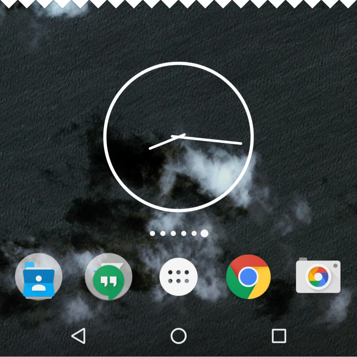
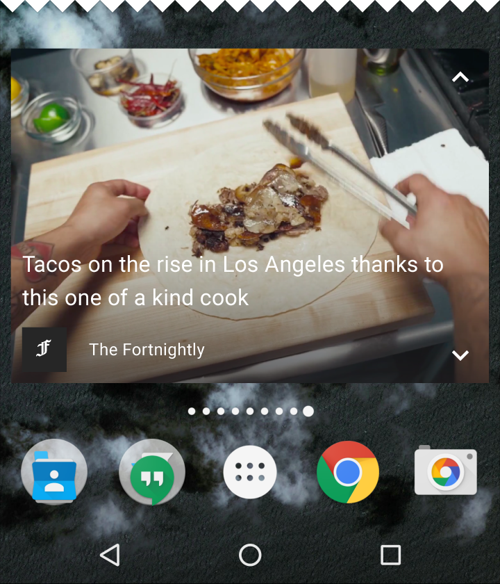
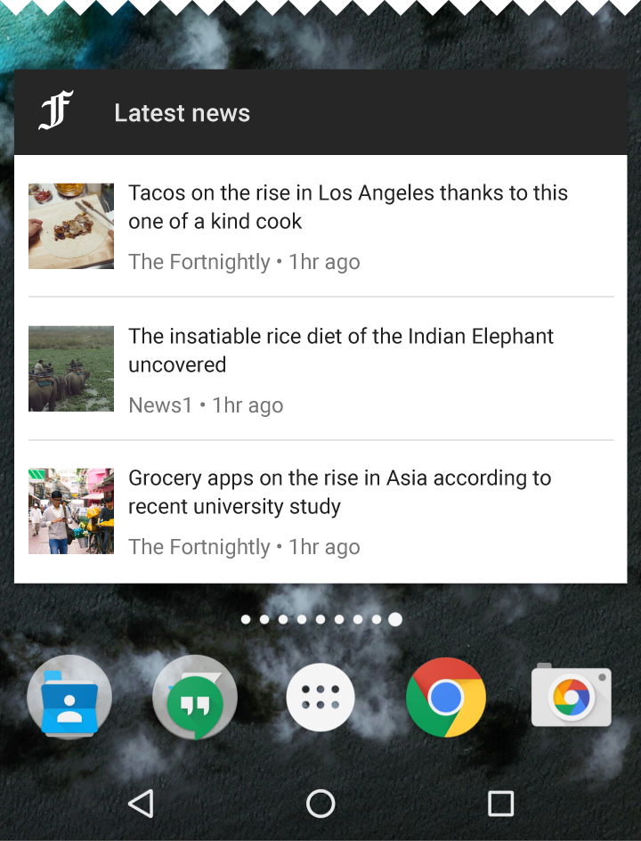
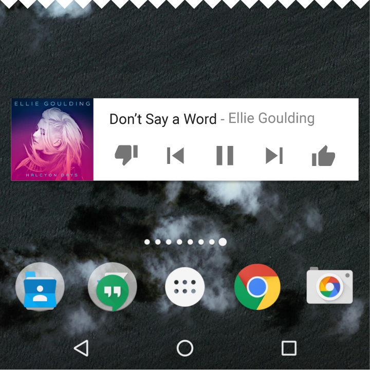

组件– 小部件
小部件
小部件类型
信息小部件
信息小部件向用户显示一些重要的元素，并跟踪该信息如何随着时间变化，例如天气、或运动成绩。点击小部件将启动相关的应用，并显示详细视图。

一个信息小部件
集合小部件
集合小部件显示同一类型的多个元素，例如来自新闻应用的文章集合。它们专注于两种交互：
- 浏览集合
- 打开一个元素的详细视图
集合小部件可以垂直滚动

集合小部件

控制小部件
控制小部件显示常见功能。这些功能可以从主屏幕触发，而不用打开对应的应用。例如，音乐应用的小部件允许用户在音乐应用外部播放、暂停或跳过音乐曲目。
控制小部件可能可以进入详细视图，也可能不能进入详细视图。

一个控制小部件
混合小部件
许多小部件混合了以上多种不同类型的元素。将你的小部件居中放在这些类型的其中一个中，并根据需要添加其他元素。
例如，音乐播放小部件把一个控制小部件和一个信息小部件混合在一起。使用户可以知道当前正在播放哪一个音轨。

一个混合小部件
行为
导航
你的小部件应提供指向应用常用区域的导航链接，其中包括：
- 允许用户创建新内容，例如新建文本或消息
- 允许访问应用的顶层
调整小部件大小
用户可以调整小部件的高度和宽度。这可以使用户调整主屏幕上的小部件的布局。
你的应用可以同时支持横向纵向调整大小，或只支持横向、或只支持纵向调整大小。

长按之后可调整大小的小部件将进入调整大小模式。用户可以拖动手柄或小部件角度来设置所需的大小。
可滚动小部件
列表或基于网格的集合小部件通常会展开或收缩垂直滚动区域。无论小部件大小，用户都可以滚动视图内的所有元素。
确定应该显示多少应用信息。对于较小的小部件，只显示信息要点，并在展开小部件时添加更多相关信息。
不可滚动小部件
信息小部件不可滚动，所有内容和布局都必须根据用户设置的小部件的大小动态匹配。
响应式小部件
小部件应该适应不同设备的空间要求，包括单元格数量，大小和空间变化。
配置小部件
Android 小部件放置在主面板上时会显示其配置项。
配置的最佳实践：
- 保持配置的轻量，不要超过 2-3 个配置元素
- 当前的配置选择使用对话框，不要用全屏，以保留用户的上下文。
一旦设置完，小部件通常不会再显示 “设置” 或 “配置” 按钮。